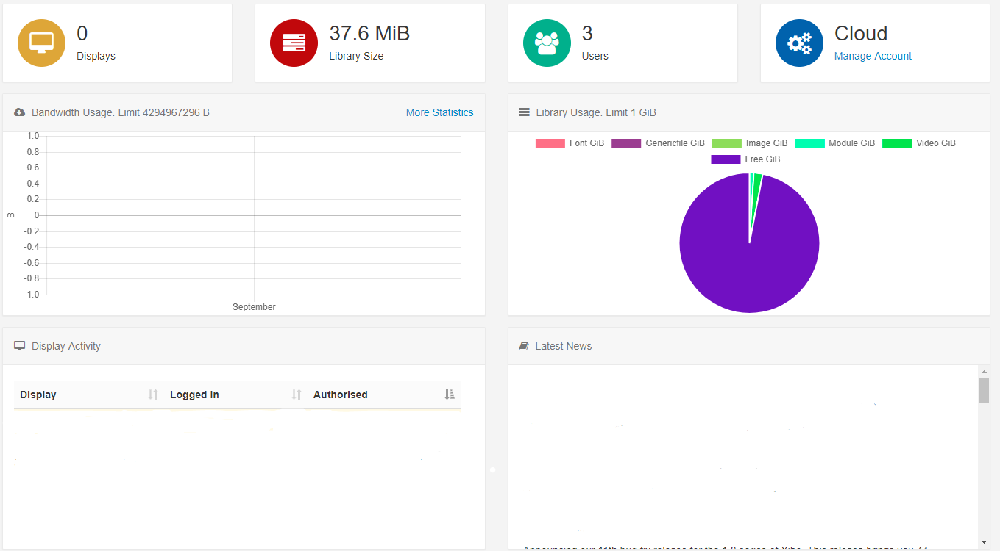

CMS Dashboards
The assigned Dashboard will be the first screen that Users will see after login. There are three Dashboard views of the CMS that can be assigned to Users.
Status Dashboard
The CMS Status Dashboard is the default Dashboard for Super Admin Users and is intended as a high-level view of the system for Administrators. It provides information relating to Library and Bandwidth usage, Display Activity and Latest news.

Icon Dashboard
The CMS Icon Dashboard is the default Dashboard for all new assigned Users and is intended as a Launcher into other areas of the CMS. The icons within the Dashboard are shown/hidden according to the menu permissions for the User.

Media Dashboard
The CMS Media Dashboard can be enabled for Users who should only edit the Media they have been given permission for. The Media Dashboard gives a restricted access view of the CMS presented in a grid style interface which lists each item the User has permissions to edit.
Ensure that your User has the required Permissions applied so that they can access the Media Dashboard and view/edit content of a Layout. See Permissions for guidance.
How to set Dashboard views
- Navigate to the Users section under Administration on the Menu.
- Use the drop down row menu for the selected User and click on Edit to open the Edit User form.
- Use the dropdown menu for Homepage and scroll to the Dashboard you wish to assign.
- Save.